Syllabus Topics
- 2.1 Types of intersections
- 2.2 Un-channelized and channelized intersections
- 2.3 Grade separated intersections (Overpass, underpass and interchanges)
- 2.4 Rotary intersection
- 2.5 Traffic control devices: Traffic sign, marking and islands
- 2.6 Traffic signal
- 2.7 Warrants for traffic signalization
- 2.8 Traffic signal design by Webster method
- 2.9 Traffic calming measures
- 2.10 Importance and design of street lighting
2.1 Types of Intersections
Past Exam Questions on this Topic
- What are the basic requirements of intersection at grade? Mention the factors affecting night visibility at road. How much is the recommended lateral offset of the lighting poles at the road? Explain with reasoning: [3+3+2] (2082 Bhadra, Q3)
Solution
Basic requirements of an at-grade intersection: adequate sight distance, minimum number of conflict points, channelization to guide traffic, low relative speed of crossing streams, adequate capacity, simple and clear layout, and provision for pedestrians, drainage and lighting.
Factors affecting night visibility: brightness/luminance of source, contrast, glare, size of object, and adaptation time of the eye.
Lateral offset of lighting poles: poles are placed clear of the carriageway - a lateral offset of about 0.3 m beyond the kerb face (outside the clear zone) is recommended so that poles do not become a collision hazard, with mounting height at least equal to the road width for full coverage.
Exact recommended offset for local practice should be read from the design Manual.pdf (street-lighting section).
- What are the advantages of one way traffic movement? Draw a right angle four arm intersection of two roads and show various conflict points, if both roads with two way movements? Classify the type of conflicts [8] (2081 Baishakh, Q3)
Solution
Advantages of one-way traffic movement: increased capacity, fewer conflict points, higher operating speed, easier signal coordination, fewer accidents, better parking use and simpler turning movements.
Conflict points at a right-angle four-arm intersection (both roads two-way): there are 32 conflict points = 16 crossing + 8 merging + 8 diverging. Making the roads one-way sharply reduces them. Types of conflict: crossing, merging (converging) and diverging.
- What are the basic requirements of intersection at grade? Write down the design steps of rotary intersection. (2075 Chaitra, Q1)
Solution
Basic requirements of an at-grade intersection: adequate sight distance, minimum number of conflict points, channelization to guide traffic, low relative speed of crossing streams, adequate capacity, simple and clear layout, and provision for pedestrians, drainage and lighting.
Design steps of a rotary intersection:
- Collect traffic (turning-movement) and design data.
- Select the rotary design speed (usually 30-40 km/h).
- Fix the shape and size of the central island and the rotary radius.
- Determine the weaving length and weaving width.
- Fix entry and exit widths and their radii.
- Check the weaving capacity (Wardrop's formula) against design flow.
- Provide islands, markings, signs, lighting and channelization.
- What are the basic requirements of intersection at grade? Mention the importance of street lighting. Explain the different types of traffic islands. How is accident study carried out? Two vehicles A and B approaching at right angles, vehicle A from West and vehicle B from south, collide with each other. After the collision, vehicle A skids in a direction 49° N of W and vehicle B skids 27° E of N. The initial skid distances of vehicles A and B are 37 m and 19 m respectively before collision. If the weight of vehicle A is 4 tonne and vehicle B is 6 tonne, and the skid distances after collision for vehicle A is 15 m and for vehicle B is 36 m, calculate the initial speeds of the vehicles if the average skid resistance of the pavement is found to be 0.55. (2075 Ashwin, Q1)
Solution
Basic requirements of an at-grade intersection: adequate sight distance, minimum conflict points, channelization to guide traffic, adequate capacity, low relative speed, clear and simple layout, provision for pedestrians and proper drainage/lighting.
Importance of street lighting: improves night visibility & safety, reduces night accidents, aids pedestrian security, improves traffic flow and comfort, and enhances aesthetics.
Types of traffic islands: divisional islands, channelizing islands, pedestrian refuge islands, and rotary (central) islands.
Accident study is carried out by collecting accident data (spot maps, collision & condition diagrams), analysing causes (road user, vehicle, road, environment), and applying remedial 3-E measures (Engineering, Enforcement, Education).
Collision numerical. f = 0.55. Post-collision speeds v = √(2 g f d): vA' = √(2×9.81×0.55×15) = 12.72 m/s; vB' = √(2×9.81×0.55×36) = 19.71 m/s. Apply momentum conservation along E-W and N-S using the given deflection angles (A: 49° N of W, B: 27° E of N) to get the impact speeds, then add the pre-collision skid energy over 37 m and 19 m: u0 = √(uimpact² + 2 g f dpre).
Weights (A = 4 t, B = 6 t) enter only as the mass ratio in the momentum equations.
- What are the basic requirements of intersection at grade? Describe grade separated intersection with its advantages and disadvantages. (2074 Ashwin, Q1)
Solution
Basic requirements of an at-grade intersection: adequate sight distance, minimum number of conflict points, channelization to guide traffic, low relative speed of crossing streams, adequate capacity, simple and clear layout, and provision for pedestrians, drainage and lighting.
Grade-separated intersection - advantages: no crossing conflicts, high capacity, continuous high-speed flow, greater safety, minimal delay. Disadvantages: very high cost, large land requirement, complex/long structures and ramps, not economical for low volumes, and possible aesthetic/environmental impact.
Review
- Crash study and Objectives
- Causes of road crash
- Crash data collection, Reporting and Records
- Crash study
- Crash analysis (collision of moving vehicle with parked vehicle, collision of vehicles approaching at intersection from right angle)
Road Intersection and Types20812076
- Area where two or more roads join or cross including the roadway and roadside facilities for traffic movement within it (AASHTO 2001).
- Traffic movement in different directions. About two third of all urban road crashes and one third of all rural road crashes occur within 18 m of an intersection.
- Types:
- At Grade Intersection
- Grade Separated Intersection
At Grade Intersection
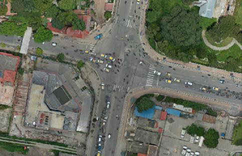
- Intersection where all roadways join or cross at the same level
- All traffic maneuvers take place on the same plane.
Basic Requirement of At Grade Intersection208220752074
- Minimum conflict points
- Separate provision for pedestrians and cyclists if their volume is high
- Sudden change of path should be avoided
- Adequate turning radius and width of pavement should be provided
- Adequate visibility for vehicles
- Small approach speed
- Proper sign should be provided
- Good lighting shall be provided for night
Types of At Grade Intersection
Based on number of intersecting legs:
- T or Three-leg intersections: with three approaches (T- and Y-shaped)
- Four-leg or cross intersections: with four approaches
- Multi-leg intersections: with five or more approaches (e.g. scissor, cross, staggered-T, staggered, skewed and multiway layouts)
2.2 Un-Channelized and Channelized Intersections
Past Exam Questions on this Topic
- What are the factors affecting night visibility? What are the different types of road marking and traffic island used to regulate and control traffic flow? Explain. [2+3+3] (2076 Ashwin, Q4)
Solution
Factors affecting night visibility: luminance/brightness of the source, contrast between object and background, glare (disability and discomfort), size of the object, and the driver's adaptation/available time.
Types of road markings: longitudinal (centre line, lane lines, edge lines, no-overtaking lines), transverse (stop line, give-way line, pedestrian crossing) and other markings (directional arrows, word messages, hazard/parking markings).
Traffic islands used to regulate and control flow: divisional islands, channelizing islands, pedestrian refuge islands, and rotary (central) islands.
- What are the basic requirements of intersection at grade? Mention the importance of street lighting. Explain the different types of traffic islands. How is accident study carried out? Two vehicles A and B approaching at right angles, vehicle A from West and vehicle B from south, collide with each other. After the collision, vehicle A skids in a direction 49° N of W and vehicle B skids 27° E of N. The initial skid distances of vehicles A and B are 37 m and 19 m respectively before collision. If the weight of vehicle A is 4 tonne and vehicle B is 6 tonne, and the skid distances after collision for vehicle A is 15 m and for vehicle B is 36 m, calculate the initial speeds of the vehicles if the average skid resistance of the pavement is found to be 0.55. (2075 Ashwin, Q1)
Solution
Basic requirements of an at-grade intersection: adequate sight distance, minimum conflict points, channelization to guide traffic, adequate capacity, low relative speed, clear and simple layout, provision for pedestrians and proper drainage/lighting.
Importance of street lighting: improves night visibility & safety, reduces night accidents, aids pedestrian security, improves traffic flow and comfort, and enhances aesthetics.
Types of traffic islands: divisional islands, channelizing islands, pedestrian refuge islands, and rotary (central) islands.
Accident study is carried out by collecting accident data (spot maps, collision & condition diagrams), analysing causes (road user, vehicle, road, environment), and applying remedial 3-E measures (Engineering, Enforcement, Education).
Collision numerical. f = 0.55. Post-collision speeds v = √(2 g f d): vA' = √(2×9.81×0.55×15) = 12.72 m/s; vB' = √(2×9.81×0.55×36) = 19.71 m/s. Apply momentum conservation along E-W and N-S using the given deflection angles (A: 49° N of W, B: 27° E of N) to get the impact speeds, then add the pre-collision skid energy over 37 m and 19 m: u0 = √(uimpact² + 2 g f dpre).
Weights (A = 4 t, B = 6 t) enter only as the mass ratio in the momentum equations.
Unchannelized Intersection
- At grade intersection without channelizing island for directing traffic into definite path.
- Traffic from all approaches intermixes and proceed to their desired path
- Lowest class of intersection, frequent road crashes
- Two types:
- Plain (Simple) intersection,
- Flared intersection
Plain (Simple) Intersection
- No additional lanes are provided for turning movements at intersection approaches.
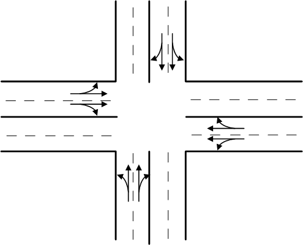
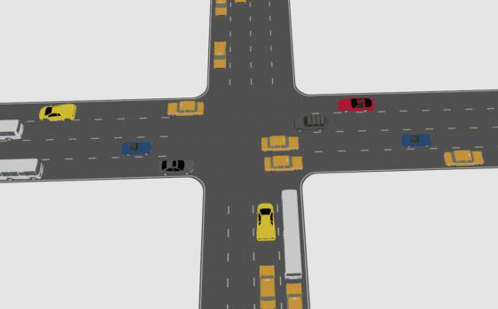
Flared Intersection
- Approach roads are widened near the intersection by adding one or more lanes to facilitate right/left turning traffic.
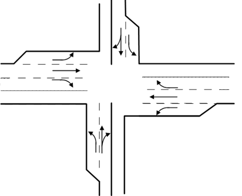
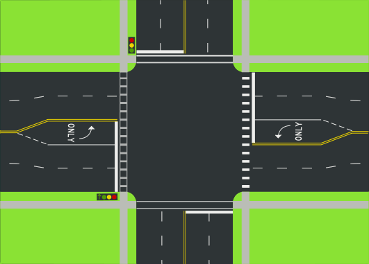
Channelized Intersection20762075
- Vehicles approaching an intersection are directed to definite paths by islands, marking etc.
- Channelization can be partial or complete.
- Islands are introduced into the intersectional area.
- It reduces the number of possible conflicts by reducing the area of conflicts available in the carriageway.
- Channelized intersection provides more safety and efficiency.
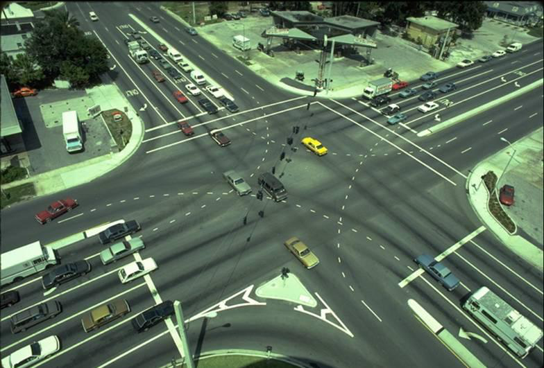
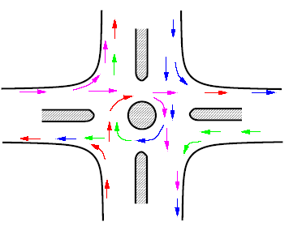
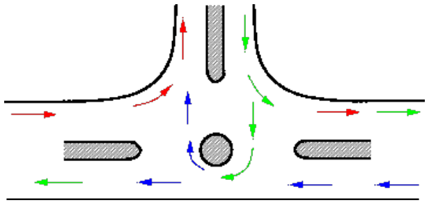

Advantages:
- Vehicles are confined to definite path
- Decrease conflict area
- Control angle of conflict
- Speed control of entering vehicle
- Refuse island for pedestrian
- Place for installation of traffic signs
Disadvantages:
- Require large area
- Difficult to design
- One of crossing vehicle will have to stop while other crossing
Conflict Points at Intersections
- Conflicts occur when traffic streams moving in different directions interfere with each other.
- Four types of conflicts: Diverging, Merging, Crossing, Weaving
- The number of possible conflict points at any intersection depends on:
- number of approaches
- turning movements
- type of traffic control
Types of Conflicts
- Diverging (right, left)
- Merging (right, left)
- Crossing (direct, opposed)
- Weaving (elemental)
Conflict Points
Crossing, Diverging, Merging
N-S one-way: Crossing, Diverging, Merging
Merging, Diverging, Crossing
2.3 Grade Separated Intersections (Overpass, Underpass and Interchanges)
Past Exam Questions on this Topic
- Discuss different types of intersection Write the advantages and limitations of grade separated intersection: [8] (2076 Chaitra, Q2)
Solution
Types of intersection: (i) at-grade - uncontrolled, channelized, rotary and signalized; (ii) grade-separated - overpass, underpass and interchanges (diamond, cloverleaf, trumpet, directional).
Grade-separated intersection - advantages: no crossing conflict, high capacity, safe continuous flow, no delay. Limitations: high construction cost, large land requirement, structural complexity, and not economical for low traffic volumes.
- What are the basic requirements of intersection at grade? Describe grade separated intersection with its advantages and disadvantages. (2074 Ashwin, Q1)
Solution
Basic requirements of an at-grade intersection: adequate sight distance, minimum number of conflict points, channelization to guide traffic, low relative speed of crossing streams, adequate capacity, simple and clear layout, and provision for pedestrians, drainage and lighting.
Grade-separated intersection - advantages: no crossing conflicts, high capacity, continuous high-speed flow, greater safety, minimal delay. Disadvantages: very high cost, large land requirement, complex/long structures and ramps, not economical for low volumes, and possible aesthetic/environmental impact.
Grade Separated Intersection20762074
- Intersection where cross flow of traffic are made at different levels so that the movements of traffic in different direction do not conflict with each other
- Grade separation is achieved by separation of intersecting highway in vertical level by means of bridge or underpass.
- Grade separation structures: Overpass, Underpass
- Types of Grade Separated Intersection
- Grade Separated Intersections without Interchange
- Grade Separated Intersections with Interchange
Advantages:
- No crossing conflicts
- Increased safety
- Better travel time, capacity almost full capacity
- Increased operational efficiency, comfort and convenient
- Possible for any angle of intersection and any number of intersecting roads
- Stage construction of ramps possible
Disadvantages:
- Requires large area
- Costly infrastructures
- Unnecessary rise and sags are introduced in vertical alignment
Grade Separated Intersection without Interchange
- Simply introduction of an overhead bridge or underpass which enable the traffic stream on the intersecting roads to cross over each other without any conflicts.
- Ramps (Connecting roads) are not provided to connect roads at different levels.
Grade Separation Structures (Overpass)
- Major highway is taken above by raising its profile above the general ground level by embankment and over bridge across another highway
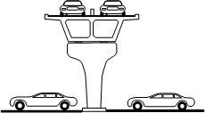
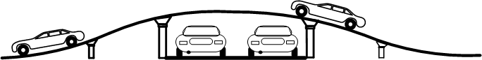
Advantages:
- Drainage problems are avoided
- Future and lateral expansion is possible
Disadvantages:
- Potential steep gradient at the entry and exit
- Restriction on sight distance if long vertical curves are not provided
Grade Separation Structures (Underpass)
- A highway is taken below by depressing it below ground level to cross another road/rail road etc.
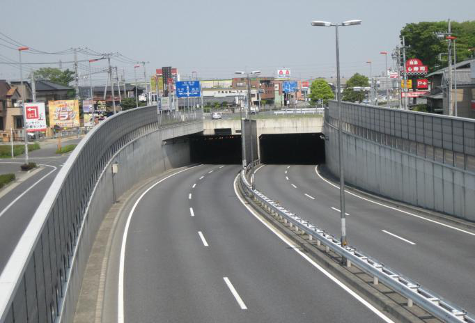
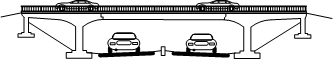
Advantages:
- Vehicles on major road are not changing its vertical profile if minor road is taken underground
- No restricting on sight distance
Disadvantages:
- High cost of construction than overpass
- Drainage problem
Grade Separated Intersection with Interchange
- Intersection in which vehicles moving in one direction of flow may transfer to another direction by the use of connecting roads (Ramps)
- Interchange Facilities
- Direct
- Semi Direct
- Indirect
Types of Ramp Facilities
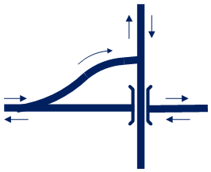
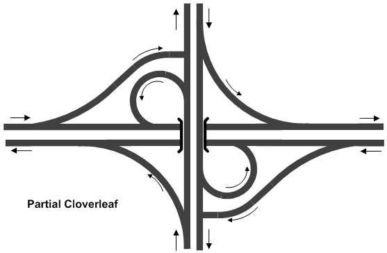
Semi Direct
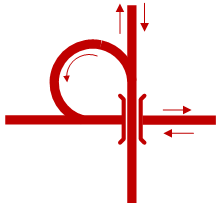
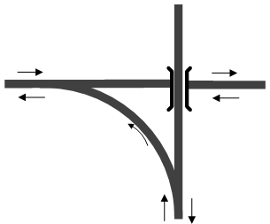
Grade Separated Intersection with Interchange
Advantages:
- Avoids necessity of stopping
- Increasing safety and easiness for turning traffic
- Save travel time and VOC
- Stage construction is possible
Disadvantages:
- Costly
- Difficult, costly and unfavorable when the topography is not favorable
- Undesirable crests and sags
Types of Interchange
- Trumpet Interchange (Three leg interchange)
- Diamond Interchange
- Cloverleaf Interchange
- Partial Cloverleaf Interchange
- Directional Interchange
- Bridged Rotary (Rotary Interchange)
Trumpet Interchanges
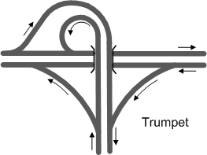
- Trumpet interchanges have been used where one highway terminates at another highway at almost 90o.
- The principal advantages are low construction cost
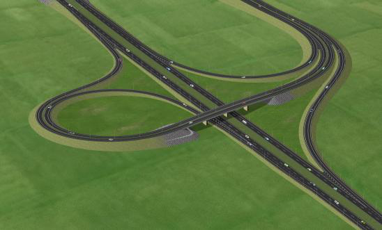
Directional Y
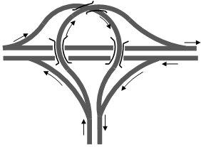
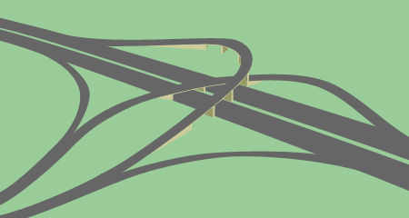
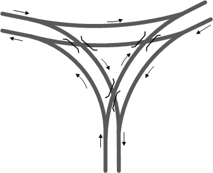
Diamond Interchange
- A diamond interchange is a common type of road junction, used where a freeway crosses a minor road.
- The diamond interchange uses less space therefore suitable for area with narrow ROW major road
- Disadvantage is that a possibility of illegal turnings.
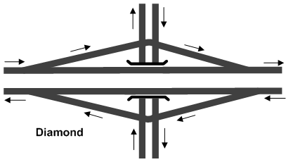
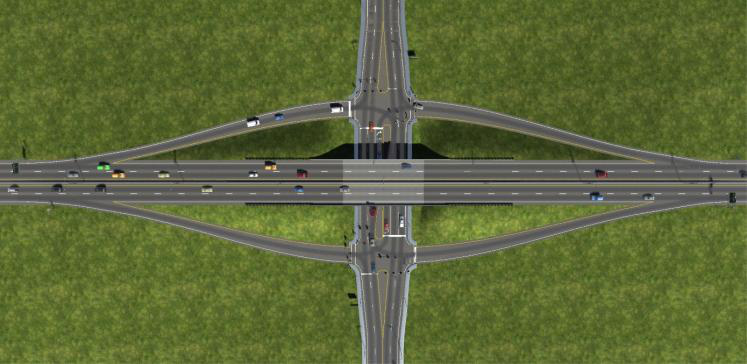
Cloverleaf Interchange
- A cloverleaf interchange is a two-level interchange in which left turns (right turns in left hand driving) are handled by loop ramps.
- Suitable when two high volume and high-speed roads intersect
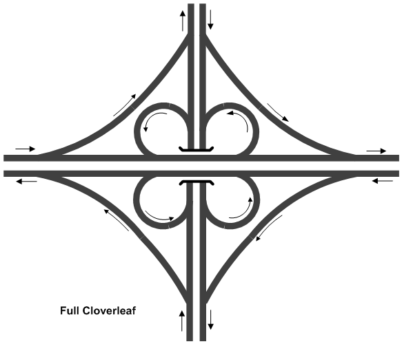
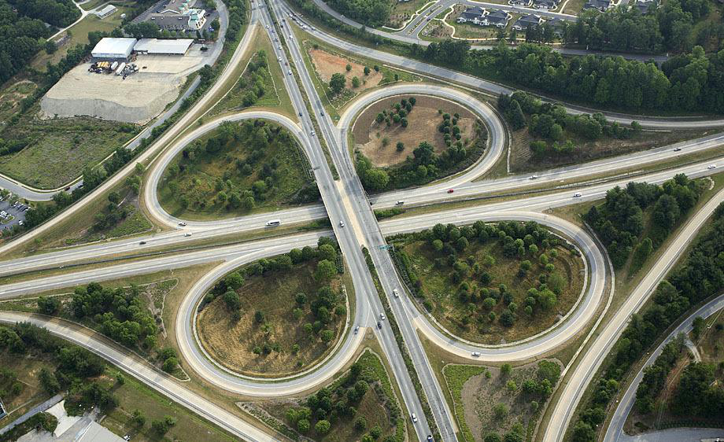
Advantages:
- Traffic not impeded
- Direct left turn
- Simple to use
Disadvantages:
- Require large area
- Right turn require extra distance
- Carriageway larger
Partial Cloverleaf
- Partial clover leaf is a modification that combines some elements of a diamond interchange with one or more loops of a cloverleaf to eliminate only the more critical turning conflicts.
- It provides more acceleration and deceleration space on the freeway.
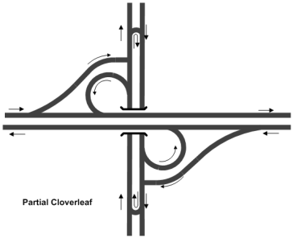
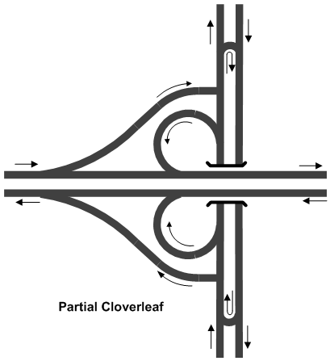
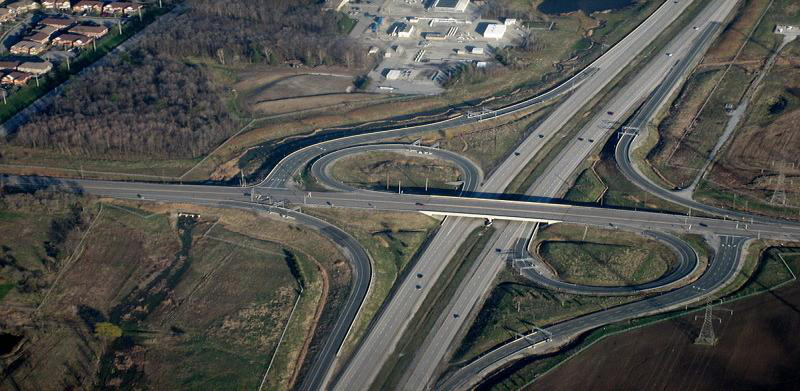
Directional Interchange
- A directional interchange provides direct paths for right turns.
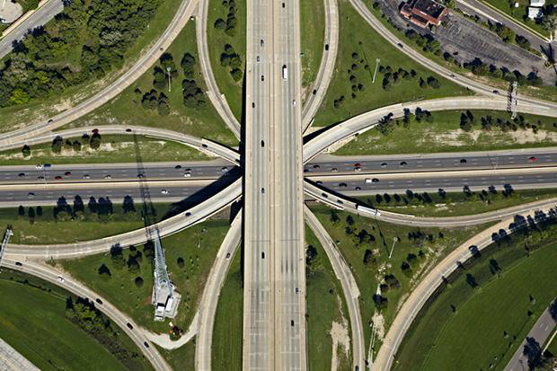
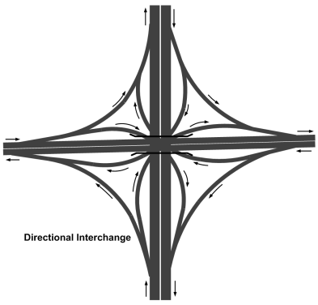
- These interchanges contain ramps for one or more direct or semi direct left turning movements.
2.4 Rotary Intersection
Past Exam Questions on this Topic
- Define spot speed and explain the methods of conducting spot speed study. Write down the advantages and limitations of rotary intersection: [8] (2081 Bhadra, Q2)
Solution
Spot speed = instantaneous speed of a vehicle at a specified point on the road.
Methods of conducting a spot-speed study:
- Manual: stopwatch + short measured base length, or enoscope (mirror box).
- Automatic: pneumatic road tubes, inductive loop detectors, Doppler radar gun, LIDAR speed gun, and video / image-processing systems.
Advantages of a rotary intersection: continuous (stop-free) movement; all crossing manoeuvres converted to merging, weaving and diverging; self-regulating (no signal); eliminates severe right-angle and head-on conflicts; orderly and aesthetic.
Limitations: requires large land area; unsuitable for very high volumes or heavy pedestrian movement; causes delay under heavy flow; not suited to high-speed traffic or steep gradients; costly where land is expensive.
- What are the basic requirements of intersection at grade? Write down the design steps of rotary intersection. (2075 Chaitra, Q1)
Solution
Basic requirements of an at-grade intersection: adequate sight distance, minimum number of conflict points, channelization to guide traffic, low relative speed of crossing streams, adequate capacity, simple and clear layout, and provision for pedestrians, drainage and lighting.
Design steps of a rotary intersection:
- Collect traffic (turning-movement) and design data.
- Select the rotary design speed (usually 30-40 km/h).
- Fix the shape and size of the central island and the rotary radius.
- Determine the weaving length and weaving width.
- Fix entry and exit widths and their radii.
- Check the weaving capacity (Wardrop's formula) against design flow.
- Provide islands, markings, signs, lighting and channelization.
- a) The vehicle arrivals at the section of road are assumed to be Poisson distributed with an average arrival rate of 1 vehicle every 5 minutes. What is the probability of (i) Exactly 3 vehicles arrive in a 15 minute interval (ii) less than 3 vehicles arrive in a 15 minute interval? (iii) More than 3 vehicles arrive in a 15 minute interval? [4] b) Calculate the capacity of rotary with entry and exit width of 8m, the width of non-weaving section is 9m, width of rotary is 12m, length of weaving section is 60m. The ratio of weaving to total traffic in weaving section is 0.7. [4] (2076 Chaitra, Q3)
Solution
(a) Poisson arrivals. Mean rate = 1 veh / 5 min → in a 15-min interval m = 3 veh. P(x) = e−m mx/x!
- P(exactly 3) = e−3·3³/3! = 0.0498×4.5 = 0.224
- P(less than 3) = e−3(1 + 3 + 4.5) = 0.0498×8.5 = 0.423
- P(more than 3) = 1 − P(≤3) = 1 − (0.423 + 0.224) = 0.353
(b) Rotary weaving capacity (Wardrop's formula): Qp = 280·w·(1 + e/w)·(1 − p/3) / (1 + w/L).
Check the weaving width: the standard design rule sets the weaving section about one lane wider than the mean of the entry/exit and non-weaving widths: w = (e + enw)/2 + 3.5 = (8 + 9)/2 + 3.5 = 12 m — confirming the given w = 12 m, so the 9 m non-weaving width is consistent with (not extra to) the stated weaving width.
With weaving width w = 12 m, average entry/exit width e = 8 m, proportion of weaving traffic p = 0.7, weaving length L = 60 m:
Qp = 280×12×(1 + 8/12)×(1 − 0.7/3)/(1 + 12/60) = 3360×1.667×0.767/1.2 = ≈ 3578 PCU/h.
- Explain the factors to be considered in the timing design of traffic and pedestrian signals. Discuss the design of a rotary intersection. [8] (2078 Bhadra, Q9)
Solution
Factors in signal timing (traffic & pedestrian): approach volumes and saturation flows, pedestrian crossing time (walking speed & road width), minimum green, amber and all-red (clearance) intervals, start-up lost time, cycle-length limits, and signal coordination.
Rotary design factors: design speed, weaving length and width, entry/exit geometry, and weaving capacity.
- a) Define rotary intersection. What are the advantages and disadvantages of rotary intersection? [8] b) A vehicle skids through a distance of 40m before colliding with another parked vehicle; the weight of which is 75 percent of the former After collision both the vehicles skid through 14m before stopping: Compute the initial speed of moving vehicle. Assume coefficient of friction of 0.62. [8] (2068 Baishakh, Q2)
Solution
Rotary intersection = a channelized at-grade intersection with a central island around which all traffic moves one-way (anticlockwise here), converting crossing conflicts into merging, weaving and diverging.
Advantages: continuous stop-free movement, no severe right-angle/head-on conflicts, self-regulating, orderly, aesthetic. Disadvantages: large land area, poor for high volumes/heavy pedestrian flow, delay under heavy traffic, unsuitable at high speeds or steep grades.
Numerical. f = 0.62, g = 9.81. A moving vehicle skids 40 m, hits a parked vehicle (weight = 0.75×moving vehicle), then both skid 14 m together.
- Common speed after impact: v' = √(2 g f d) = √(2×9.81×0.62×14) = 13.06 m/s.
- Speed of moving vehicle just before impact (plastic collision, m and 0.75m at rest): m·uimpact = (m + 0.75m) v' → uimpact = 1.75×13.06 = 22.86 m/s.
- Initial speed (add 40 m pre-impact skid): u0 = √(22.86² + 2×9.81×0.62×40) = √(522.6 + 486.6) = 31.77 m/s = ≈ 114 km/h.
Rotary Interchange
- The major highway is taken above or below rotary intersection to separate major through flow
- Advantages:
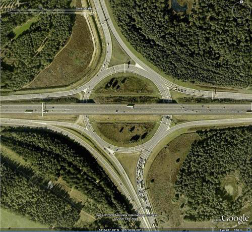
- Relatively less area than other interchange
- Carriageway area is also less
- U-turns are easy
- Disadvantages:
- Capacity is limited by capacity of rotary itself
- Weaving maneuvers
Rotary Intersection20812068
- A specialized form of at grade intersection laid out for movement of traffic at one direction round a central island before proceeding to respective direction.
- Shapes: Circular, squarish with round edge, elliptical, elongated, oval, rectangular, complex
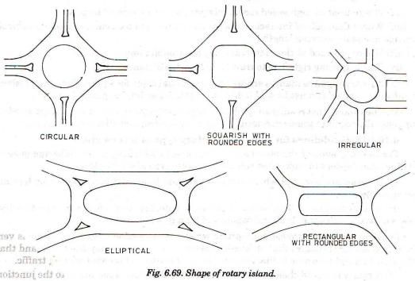
- Advantages:
- Crossing conflicts are converted into weaving
- Reduced severity of crash
- Equal opportunity for all vehicles, self functional
- Continuous and fairly uniform so reduced operational cost
- Disadvantages:
- Requires large land area
- Requires favorable and flat topographical condition
- Right turning traffic has to travel extra distance
- Complex in mixed traffic condition
- Not suitable when pedestrian traffic is high
Guideline for Selecting Rotary
- Right turning traffic is more than 30% of all approaching traffic
- Traffic volumes of intersecting legs are approximately equal
- Highest traffic volume of 3000 PCU/hr and lowest traffic volume is 500 PCU/hr.
- Intersecting legs are more than four but not more than seven
Design Guidelines (IRC: 65-1976)207820762075
- Design Speed
- 30kmph (urban area) to 40kmph (rural area)
- Shape of Central Island
- Depends on the number and layout of the intersecting roads
- Circular, elliptical, complex etc.
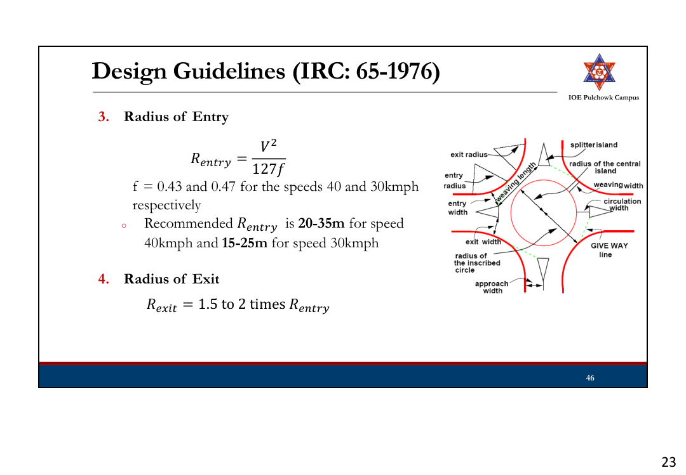
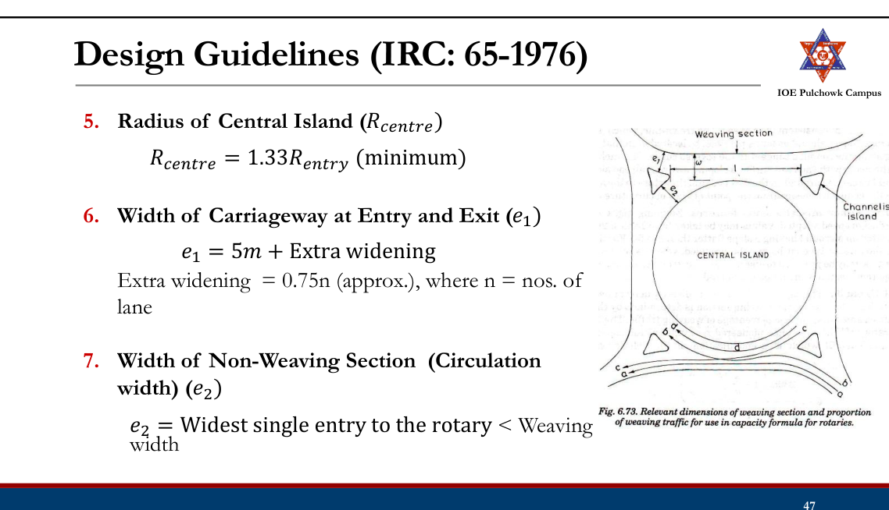
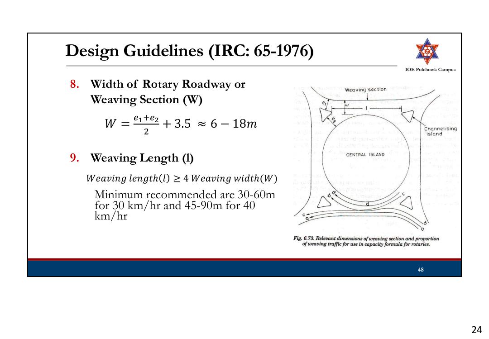
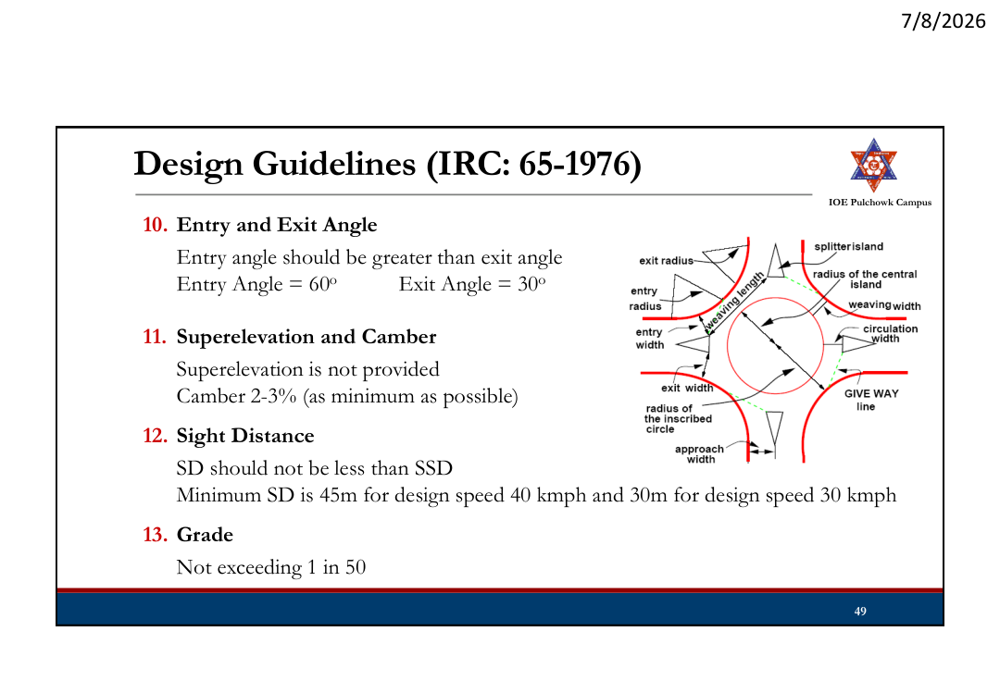
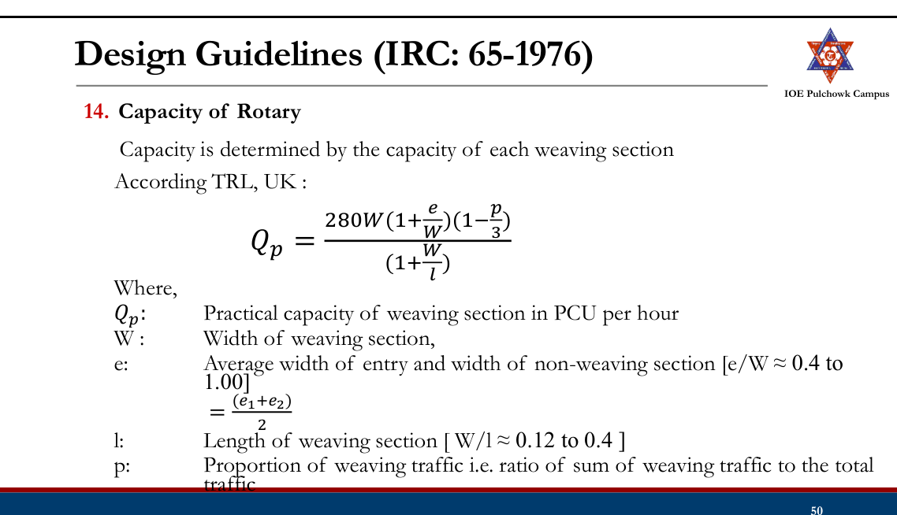
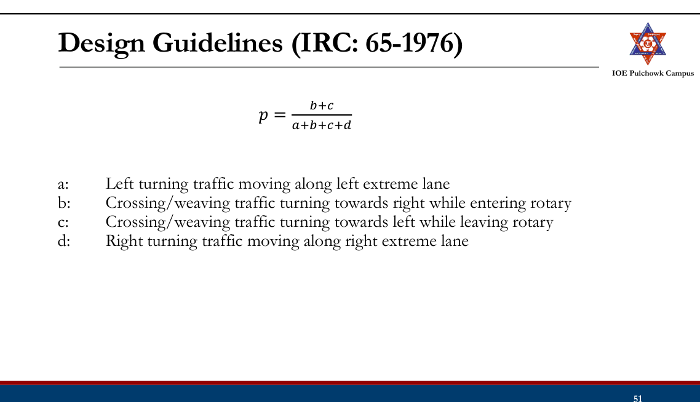
Rotary Intersection
Example: 350 630 405 At an urban intersection, two highways of 15m carriageway intersect at right angle with the traffic flow in PCU/hr for design year as mentioned in figure. Design rotary intersection making suitable assumption. 540 350 410
Tasks
➢Review road intersection and types ➢Review types of at grade intersection ➢Review unchannelized and channelized intersections ➢Review conflicts in intersection ➢Review grade separation structures ➢Review grade separated intersections with and without interchanges ➢Review rotary intersection and design
2.5 Traffic Control Devices: Traffic Sign, Marking and Islands
Past Exam Questions on this Topic
- What are the general requirements of traffic control devices? Explain the different types of traffic sign. [8] (2082 Baishakh, Q2)
Solution
General requirements of a traffic-control device: it should (1) fulfil a need, (2) command attention, (3) convey a clear and simple meaning, (4) command the respect of road users, and (5) give adequate time for a proper response.
Types: traffic signs (regulatory, warning, informatory), road markings, traffic signals and traffic islands.
- What are the factors affecting night visibility? What are the different types of road marking and traffic island used to regulate and control traffic flow? Explain. [2+3+3] (2076 Ashwin, Q4)
Solution
Factors affecting night visibility: luminance/brightness of the source, contrast between object and background, glare (disability and discomfort), size of the object, and the driver's adaptation/available time.
Types of road markings: longitudinal (centre line, lane lines, edge lines, no-overtaking lines), transverse (stop line, give-way line, pedestrian crossing) and other markings (directional arrows, word messages, hazard/parking markings).
Traffic islands used to regulate and control flow: divisional islands, channelizing islands, pedestrian refuge islands, and rotary (central) islands.
- Describe various types of traffic control devices. Write down the advantages and disadvantages of traffic signal. (2072 Chaitra, Q1)
Solution
Types of traffic signals: traffic-control (stop-go) signals, pedestrian signals, special/flashing signals, and vehicle-actuated signals; control signals may be fixed-time, traffic-actuated (semi- or fully) or manually operated.
Disadvantages of traffic signals: may increase rear-end collisions, cause delay to light/side traffic, are costly to install and maintain, and create hazards on failure or when disobeyed.
Review
- Road intersection and types
- At grade intersections: Configurations, channelized, unchannelized
- Grade separation structures
- Grade separated intersections with and without interchanges
- Rotary intersection and design
Traffic Control Devices2072
- Various devices used to control, regulate and guide traffic.
- Requirement: Attention, meaning, time of response, respect of road users
- Types:
- Traffic Signs
- Road markings
- Traffic Signals
- Traffic Island
Traffic Signs2082
According to Traffic Sign Manual 1997 DoR “Traffic sign means any object, device, line or mark on the road whose object is to convey to road users, restrictions, prohibitions, warnings or information of any description.”
Three main types:
- Regulatory signs
- Warning signs
- Informatory signs
Importance of Traffic Sign
- Give timely warning of hazardous situations
- Regulating traffic by imparting messages to the drivers about the need to stop, give way and limit their speed.
- Give information on highway route, directions and points of intersect
Principle of Traffic Signs
- Should fulfill a need
- A message be presented in simple way
- Sign should be easily noticed by driver
- Symbol and legend on signs must be easy to read;
- Command respect from road users;
- Give adequate time for proper response;
- Long lasting
Basic Requirements of Traffic Signs
- High visibility during both night and day time
- Lettering or symbols of adequate size
- Proper location
- 0.6m away from the edge of the kerb
- 2.0 ~ 3.0m from the edge of the carriageway (Roads without kerb)
Limitation of Traffic Sign
- Easily damaged due to impact or vandalism
- Visual quality degrade over time due to dirt and deterioration
- Require continuous maintenance
Regulatory Signs
- These signs give orders on what they must do and they must not do.
- DoR’s Traffic Sign Manual 1997 have 33 types of Regulatory Signs (A1-A33)
- Regulatory signs are either Mandatory or Prohibitory.
Regulatory Signs (Mandatory)
- The mandatory signs give instructions to drivers about what they must do.
- Most of them are circular with a white symbol and border on a blue background.
- Stop sign and Given Way sign have their own distinct individual shapes.
Regulatory Signs: Mandatory
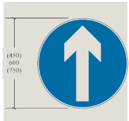
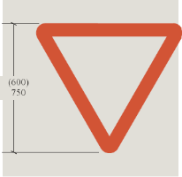
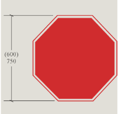
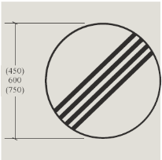
STOP · Give Way · Ahead only
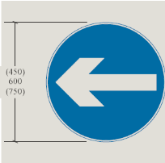
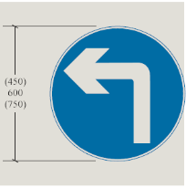
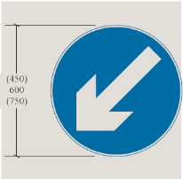
Restriction Ends · Turn Left Ahead · Keep Left · Turn Left
Regulatory Signs (Prohibitory)
- The prohibitory signs give instructions to drivers about what they must not do.
- E.g. Max. Speed Limit sign, No Parking sign, No Entry sign
- Most are circular and have a red border.
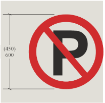
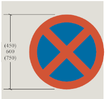
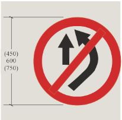
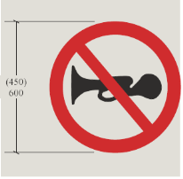
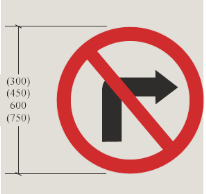
No Vehicles Over Height Shown · No Entry · No Trucks
No Vehicles Over Maximum Gross Weight Shown · Axle Weight Limit
Warning Signs
- Alert driver to danger or potential danger ahead
- Also called danger or cautionary signs
- Require motorists/cyclists to be careful and may need a reduction of speed for their own safety.
Informatory Signs
- These are used to guide the road users along routes about information of destination and distance and provide information to make travel easier, safe and pleasant
- Shape: square or rectangular
- White background with black letters or green background with while letters
Informatory Signs (Direction and Place Identification Sign)
Bus Stop · One Way Street · Place Identification · Pedestrian Crossing Sign
Advance Direction Sign
Route Confirmation Sign (after junctions)
Informatory Signs (Facility Information)
Overnight Accommodation · Hospital · Refreshments
Informatory Signs (Other Information)
Telephone · Parking Place · Bridge Name Plate
Supplementary Signs
- Gives additional information to clarify the message given by the main sign
- Mounted 75 mm below main sign
- Usually used with regulatory sign
- E.g. distance to hazard , time
Road Marking or Traffic Marking2076
Road markings are lines, patterns, symbols, words, colors or reflectors on the surface of the pavement or curb or fixed objects near highway to regulate, warn, or guide traffic. Functions:
- Guide driver in correct positioning of the vehicle in lane
- Guide driver for turning movements at junction
- Give continuous message to driver
Limitations:
- May be hidden by dirt, snow or other vehicles directly over them
- May be worn by sand or gravel.
- Wear due to traffic and the environment and must be maintained or replaced.
- Removal of markings from the pavement is a difficult task
Road Marking: Design
- Light Reflecting paints (when light occurs, it reflects) or reflectorized by adding glass beads (called ballotini) should be used to easily attract the attention of the road user.
- Raise pavement markers to 10-25 mm high
- Colors: white, black, yellow, red
Road Marking: Types
- Pavement Markings
- Kerb (Curb) Markings
- Object Marking
- Reflector Units
Pavement Markings: Longitudinal Markings
Lane Line · Hazard Line Warning · Barrier Line Do Not Cross · Edge of Carriageway · No Parking · Multi-Lane Road
Pavement Markings: Transverse Markings
- Stop Line – 400 mm in width, 1.5 m before crosswalk lines
- Crosswalk lines – min. width 1.8 m
Stop Line at Stop Sign or Traffic Lights · Drivers Must Give Way to Pedestrians on the Crossing · Pedestrians can cross when the traffic is stopped
- Diagonal lines – in traffic islands
Pavement Markings: Parking Space Markings
- Promotes efficient use of the parking spaces and prevent encroachment on bus stop, roadway etc.
- 100-150 mm wide
Pavement Markings: Lane Arrows
- Guide drivers which lane they should take when approaching a junction
- First one 15 m from junction and second one 45 m from junction
Pavement Markings
Pavement Markings: Words
- Only used in support of standard signs
- Limited to as few words as possible, never > 3 words
- White in color and elongated
- 2.4 m high and 1.8 m at low speed roads
Pavement Markings: Symbol
Kerb Marking
- Alternate black and white line painted or chequed black and white on the kerb
- 500 mm width
- Indicates pavement limit and increase visibility from a long distance
Object Marking
- Piers and abutments, monuments, traffic islands, median sign post, culvert headwalls, trees, poles etch should be marked
- Alternative black and yellow stripes with downwards slope of 45o towards the side of the obstruction
- Width 100 mm
Reflector Unit
- A road marking unit comprising a housing with a light- transmitting window, which automatically flash light in dark or bad weather
- Also known as cat’s eye
- Used in sharp curved roads, intersections, hilly areas, foggy weather and fly-overs.
Traffic Island
- Raised areas constructed within carriageway to establish physical channel to guide traffic
- Provided to avoid or minimize major or minor traffic conflict
Types of Traffic Island
- Divisional Island (Median)
- Channelizing Island
- Rotary Island
- Pedestrian refuse
Divisional Island
- Separate opposing flow of traffic
- Head on collision are reduced
- Usually installed at road with 4 or more lanes
- To eliminate the head light glare during night driving, the width of this island should be quite large
- Also provides a refuge for pedestrians
Channelizing Island
- To guide traffic into proper channel at intersection.
- To control and direct traffic movement, usually turning traffic
- Should be located with respect to approach that their visibility is clear and the intended path is automatically selected.
- Serve as location for other traffic control devices, refuge islands
Rotary Island
- Rotary island is much larger than the central island of channelized intersection
- All approaching vehicles forced to move around a large central island before weave out into the desired direction
- Crossing maneuver is converted to weaving
Pedestrian Refuse Island
- Located on the cross walks to provide refuse for the pedestrians on wide roads where traffic flow is heavy.
- Serves as safety zones for protection of pedestrian to cross road
- Particularly useful at intersections in urban areas
Tasks
➢Review traffic signs, importance, limitations, principles, basic requirement ➢Review types of traffic signs (regulatory, warning, informatory, supplementary) ➢Review road marking, function, limitations, design ➢Review types of road marking (pavement marking, kerb marking, object marking, reflector units) ➢Review traffic islands (divisional, channelizing, rotary, pedestrian refugee)
2.6 Traffic Signal2072
Notes not available for this topic. The corresponding lecture was not included in the provided source material. The past exam questions on this topic are listed below.
Past Exam Questions on this Topic
- Describe various types of traffic control devices. Write down the advantages and disadvantages of traffic signal. (2072 Chaitra, Q1)
Solution
Types of traffic signals: traffic-control (stop-go) signals, pedestrian signals, special/flashing signals, and vehicle-actuated signals; control signals may be fixed-time, traffic-actuated (semi- or fully) or manually operated.
Disadvantages of traffic signals: may increase rear-end collisions, cause delay to light/side traffic, are costly to install and maintain, and create hazards on failure or when disobeyed.
2.7 Warrants for Traffic Signalization
Notes not available for this topic. The corresponding lecture was not included in the provided source material. The past exam questions on this topic are listed below.
2.8 Traffic Signal Design by Webster Method2082208120802076207520732071
Notes not available for this topic. The corresponding lecture was not included in the provided source material. The past exam questions on this topic are listed below.
Past Exam Questions on this Topic
- Design an isolated traffic Signal at an intersection of road X (15 m width), and road Y (10.5 m width) The highest observed traffic volume per lane is 250 vehicles per hour on road X and 200 vehicles per hour on road Y. The approach speeds are 50 km/h for road X and 35 km/h for road Y. Design the traffic and pedestrian signal timings for this intersection. Also, prepare a phase diagram showing both vehicular and pedestrian signal timing. [8] (2082 Bhadra, Q4)
Solution
Approach-speed / pedestrian-crossing method (Marsani, two-phase isolated signal). Road X: 15 m, 50 km/h, 250 veh/h/lane; Road Y: 10.5 m, 35 km/h, 200 veh/h/lane.
1. Amber (from approach speed): both approaches ≤ 50 km/h → AX = AY = 3 s.
2. Pedestrian clearance (walking speed 1.2 m/s): CIX = 15/1.2 = 12.5 s; CIY = 10.5/1.2 = 8.75 s.
3. Minimum red = clearance + 7 s initial walk: RX = 12.5 + 7 = 19.5 s; RY = 8.75 + 7 = 15.75 s.
4. Minimum green (pedestrian criterion), green = other road's red − own amber: GY = RX − AY = 19.5 − 3 = 16.5 s; GX = RY − AX = 15.75 − 3 = 12.75 s.
5. Adjust for approach volume (road X has the higher volume). Anchor the lower-volume road Y at its pedestrian minimum GY = 16.5 s and scale road X by the volume ratio: GX = GY×(nX/nY) = 16.5×(250/200) = 20.63 s (> 12.75 s, so road X pedestrian minimum is satisfied).
6. Cycle: C = GX + AX + GY + AY = 20.63 + 3 + 16.5 + 3 = 43.13 s → adopt C = 45 s. Distribute the excess 45 − 43.13 = 1.87 s in proportion to volume: GX = 20.63 + (250/450)×1.87 = 21.67 s; GY = 16.5 + (200/450)×1.87 = 17.33 s.
7. Red times: RX = GY + AY = 17.33 + 3 = 20.33 s; RY = GX + AX = 21.67 + 3 = 24.67 s.
8. Pedestrian signals: Do-not-walk = the parallel road's red; walk = C − DW − clearance. PSX: DW = RY = 24.67 s, Walk = 45 − 24.67 − 12.5 = 7.83 s; PSY: DW = RX = 20.33 s, Walk = 45 − 20.33 − 8.75 = 15.92 s.
Phase diagram (C = 45 s): Phase 1 — Road X green 21.67 s + amber 3 s (Road Y red); Phase 2 — Road Y green 17.33 s + amber 3 s (Road X red). Pedestrians crossing a road get WALK during that road's red and clearance/DON'T-WALK as above.
Solved by Marsani's approach-speed pedestrian-crossing procedure (pp. 73-75); the worked text uses the same 50/35 km/h approach speeds, 1.2 m/s walk, 7 s initial walk and 3/4/5 s amber rule.
- An isolated signal with pedestrian indication is to be installed on a right angled intersection with road A,l8m wide and road B, 12m wide. The heaviest volume per hour for each lane of road A and B are 300 and 250, respectively. The approach speeds are 55 and 40 kmph for road A and B respectively. Design the timing of traffic and pedestrian signals. [8] (2081 Baishakh, Q4)
Solution
Approach-speed / pedestrian-crossing method (Marsani, two-phase isolated signal). Road A: 18 m, 55 km/h, 300 veh/h/lane; Road B: 12 m, 40 km/h, 250 veh/h/lane.
1. Amber (from approach speed): Road A 55 km/h (50–60) → AA = 4 s; Road B 40 km/h (≤50) → AB = 3 s.
2. Pedestrian clearance (1.2 m/s): CIA = 18/1.2 = 15 s; CIB = 12/1.2 = 10 s.
3. Minimum red = clearance + 7 s: RA = 15 + 7 = 22 s; RB = 10 + 7 = 17 s.
4. Minimum green (pedestrian): GB = RA − AB = 22 − 3 = 19 s; GA = RB − AA = 17 − 4 = 13 s.
5. Adjust for volume (road A higher). Anchor road B at GB = 19 s; GA = 19×(300/250) = 22.8 s (> 13 s ✓).
6. Cycle: C = 22.8 + 4 + 19 + 3 = 48.8 s → adopt C = 50 s. Excess 1.2 s by volume: GA = 22.8 + (300/550)×1.2 = 23.45 s; GB = 19 + (250/550)×1.2 = 19.55 s.
7. Red times: RA = GB + AB = 19.55 + 3 = 22.55 s; RB = GA + AA = 23.45 + 4 = 27.45 s.
8. Pedestrian signals: PSA: DW = RB = 27.45 s, Walk = 50 − 27.45 − 15 = 7.55 s; PSB: DW = RA = 22.55 s, Walk = 50 − 22.55 − 10 = 17.45 s.
Phase diagram (C = 50 s): Phase 1 — Road A green 23.45 s + amber 4 s; Phase 2 — Road B green 19.55 s + amber 3 s.
Solved by Marsani's approach-speed pedestrian-crossing procedure (pp. 73-75): amber 4 s for 50–60 km/h and 3 s for ≤50 km/h, 1.2 m/s walk, 7 s initial walk.
- Using the data in the table below, come up with the cycle length and actual green for a 2-phase signal. Assume a lost time per phase of 3 seconds, yellow time of 3 seconds and all-red time of 4 sec. [8] (2080 Bhadra, Q3)
Approach flows & saturation flows Approach East North West South Flow (veh/hr) 488 338 115 217 Saturation flow (veh/hr) 1725 1725 1725 1725 Solution
Webster two-phase design. Phase 1 = North-South, Phase 2 = East-West; S = 1725 veh/h on every approach.
- Phase 1 critical y1 = max(338, 217)/1725 = 338/1725 = 0.196
- Phase 2 critical y2 = max(488, 115)/1725 = 488/1725 = 0.283
Y = 0.196 + 0.283 = 0.479. Lost time L = 2×(lost 3 s) + all-red 4 s = 10 s (amber 3 s taken as effective green).
Optimum cycle C0 = (1.5L + 5)/(1 − Y) = (15 + 5)/(1 − 0.479) = 20/0.521 = ≈ 40 s.
Total effective green = C0 − L = 30 s → g1 = (0.196/0.479)×30 = 12.3 s, g2 = (0.283/0.479)×30 = 17.7 s. Actual green = effective green + start-up lost − amber; add the phase diagram.
Amber taken as effective and one all-red per cycle; if both all-red intervals and amber losses are counted, L (and hence C0) increases accordingly.
- The average normal flow of traffic on the cross roads 1 and 2 during design period are 450 and 350 PCU/hr. The saturation headway on these roads are estimated as 2.5 sec and 3.75 sec respectively. The all red time required for pedestrian crossing is 15 sec. Design two phase signal by Webster's method with neat phase diagram. Take amber time of 2 sec on each phase for clearance and start-up loss time of 2 sec and 3 sec for roads 1 & 2 respectively. [8] (2076 Chaitra, Q4)
Solution
Webster two-phase design. Saturation flow S = 3600/saturation headway.
- Road 1: S1 = 3600/2.5 = 1440 PCU/h; y1 = 450/1440 = 0.313
- Road 2: S2 = 3600/3.75 = 960 PCU/h; y2 = 350/960 = 0.365
Y = 0.313 + 0.365 = 0.678. Total lost time L = Σ(start-up + amber) + all-red = (2 + 2) + (3 + 2) + 15 = 24 s.
Optimum cycle C0 = (1.5L + 5)/(1 − Y) = (1.5×24 + 5)/(1 − 0.678) = 41/0.322 = ≈ 127 s.
Effective green = C0 − L = 103 s → g1 = (y1/Y)×103 = ≈ 47.5 s; g2 = (y2/Y)×103 = ≈ 55.5 s.
Check: g1 + g2 + amber(2+2) + start-up(2+3) + all-red 15 = 127 s = C0. Add a neat phase diagram.
Lost-time accounting per Marsani (L = Σstart-up + Σamber + all-red).
- The average normal flow of traffic on cross roads A and B, of width 7m both, during the design period are 400 and 250 PCU/hr. The saturation flow values on these roads are estimated as 1250 and 1000 PCU per hour respectively. The all-red time is provided for pedestrian crossing with walking speed 1 m/sec and initial walk time 6 sec. Design a two phase traffic signal by Webster's method. [8] (2075 Chaitra, Q4)
Solution
Webster two-phase design (roads A & B, each 7 m wide).
Flow ratios: yA = qA/SA = 400/1250 = 0.32; yB = 250/1000 = 0.25; Y = Σy = 0.57.
All-red (pedestrian) time: initial walk 6 s + crossing 7 m ÷ 1 m/s = 7 s → R = 13 s.
Total lost time: amber ℓ = 2 s/phase, n = 2 phases → L = nℓ + R = 2×2 + 13 = 17 s.
Optimum cycle: C0 = (1.5L + 5)/(1 − Y) = (1.5×17 + 5)/(1 − 0.57) = 30.5/0.43 = ≈ 71 s.
Green split (effective green = C0 − L = 53.9 s): gA = (yA/Y)(C0 − L) = (0.32/0.57)×53.9 = ≈ 30.3 s; gB = (0.25/0.57)×53.9 = ≈ 23.7 s.
Check: gA + gB + 2×amber + all-red = 30.3 + 23.7 + 4 + 13 ≈ 71 s = C0. Draw the phase diagram with green, amber and the 13 s pedestrian all-red interval.
Matches Marsani's worked signal-design example exactly (400/250 flows, S = 1250/1000, 7 m width, 1 m/s walk, 6 s initial walk): Y = 0.57, C0 = 70.9 s, gA = 30.3 s, gB = 23.7 s.
- A four-legged right angled intersection is to be signalized with a fixed time 2-phase signal. The design hour flow and saturation flow are given in the table below. The lost time is 2 seconds per phase due to starting delays and the amber times for north-south and east-west are 3 seconds and 4 seconds respectively. Determine the optimum cycle time and allocate the green times to the two phases. (2075 Ashwin, Q4)
Design-hour flow & saturation flow Approach North (N) South (S) East (E) West (W) Design hour flow 900 500 800 700 Saturation flow 2500 2000 3200 3000 Solution
Webster two-phase design, 4-legged intersection. Critical flow ratio per phase = max(q/S) of its approaches.
- Phase 1 (N-S): max(900/2500, 500/2000) = max(0.360, 0.250) = 0.360
- Phase 2 (E-W): max(800/3200, 700/3000) = max(0.250, 0.233) = 0.250
Y = 0.610. Lost time L = start-up (2 + 2) + amber (3 + 4) = 11 s.
C0 = (1.5×11 + 5)/(1 − 0.610) = 21.5/0.39 = ≈ 55 s. Effective green = 44 s → g1 = (0.360/0.610)×44 = 26 s, g2 = (0.250/0.610)×44 = 18 s. Actual green G = g − amber + start-up loss.
- The average normal flow of traffic on cross roads A and B are 400 and 250 PCU per hour. The saturation headway on these roads are 3 sec and 4 sec respectively. The all-red time required for pedestrian crossing is 15 sec. Design a two phase traffic signal by Webster's method. [8] (2073 Shrawan, Q2)
Solution
Webster two-phase design. Saturation flow S = 3600/h → S1 = 3600/3 = 1200 PCU/h; S2 = 3600/4 = 900 PCU/h.
Flow ratios y1 = 400/1200 = 0.333; y2 = 250/900 = 0.278; Y = Σy = 0.611.
Total lost time L = Σamber + all-red = 2n + R = (2 + 2) + 15 = 19 s (amber 2 s/phase, all-red 15 s for pedestrian crossing).
Optimum cycle C0 = (1.5L + 5)/(1 − Y) = (1.5×19 + 5)/(1 − 0.611) = 33.5/0.389 = ≈ 86 s. Effective green = C0 − L = 67 s → g1 = (0.333/0.611)×67 = ≈ 36.5 s; g2 = (0.278/0.611)×67 = ≈ 30.5 s.
Check: g1 + g2 + amber(2 + 2) + all-red 15 = 36.5 + 30.5 + 4 + 15 = 86 s = C0. Draw the phase diagram with green, 2 s amber and the 15 s all-red pedestrian interval.
Lost-time convention L = 2n + R (amber + all-red) and the whole procedure follow Marsani's worked Webster example (q = 375/225, S = 1050/850, R = 10 s → Y = 0.62, C0 = 68.5 s).
- An isolated signal with pedestrian indication is to be installed on a right-angled intersection with road A 15 m wide and road B 12 m wide. The heaviest volume per hour for each lane of road A and road B are 300 and 250 respectively. The amber times for roads A and B are 3 and 2 seconds respectively. Design the timings of the traffic and pedestrian signals. [8] (2071 Chaitra, Q4)
Solution
Approach-speed / pedestrian-crossing method (Marsani, two-phase isolated signal). Road A: 15 m, 300 veh/h/lane; Road B: 12 m, 250 veh/h/lane; amber given AA = 3 s, AB = 2 s.
1. Pedestrian clearance (1.2 m/s): CIA = 15/1.2 = 12.5 s; CIB = 12/1.2 = 10 s.
2. Minimum red = clearance + 7 s: RA = 12.5 + 7 = 19.5 s; RB = 10 + 7 = 17 s.
3. Minimum green (pedestrian): GB = RA − AB = 19.5 − 2 = 17.5 s; GA = RB − AA = 17 − 3 = 14 s.
4. Adjust for volume (road A higher). Anchor road B at GB = 17.5 s; GA = 17.5×(300/250) = 21 s (> 14 s ✓).
5. Cycle: C = 21 + 3 + 17.5 + 2 = 43.5 s → adopt C = 45 s. Excess 1.5 s by volume: GA = 21 + (300/550)×1.5 = 21.82 s; GB = 17.5 + (250/550)×1.5 = 18.18 s.
6. Red times: RA = GB + AB = 18.18 + 2 = 20.18 s; RB = GA + AA = 21.82 + 3 = 24.82 s.
7. Pedestrian signals: PSA: DW = RB = 24.82 s, Walk = 45 − 24.82 − 12.5 = 7.68 s; PSB: DW = RA = 20.18 s, Walk = 45 − 20.18 − 10 = 14.82 s.
Phase diagram (C = 45 s): Phase 1 — Road A green 21.82 s + amber 3 s; Phase 2 — Road B green 18.18 s + amber 2 s.
Solved by Marsani's approach-speed pedestrian-crossing procedure (pp. 73-75); amber values are those given in the question, walk 1.2 m/s and 7 s initial walk per the text.
2.9 Traffic Calming Measures
Review
- Traffic Signal, advantages, disadvantages, types of operational control, warrants, design using webster’s method
Traffic Calming
- Traffic calming is a set of engineering measures and devices that reduce the negative effects of motor vehicles in built-up areas.
- The objective is to improve safety, enhance livability and protecting the environment.
Traffic Calming Measures
- Traffic calming measures generally refers to local speed control and other measures of traffic restraints to discourage unnecessary through traffic and restrict or divert heavy or commercial vehicles where appropriate but may more widely include network planning, parking policies and stimulating the alternative transport modes.
- Can be broadly classified according to the following structures:
- Changes in vertical alignments
- Changes in horizontal alignments
- Other measures
Changes in Vertical Alignment
- These measures change the road surface elevation, causing drivers to reduce speed for a comfortable ride.
- Most effective and reliable for speed reduction (IRC, 2018)
- Eg: Speed humps, speed tables, rumble strips, uneven road surface, raised pedestrian crossing, raised intersections
Rumble strips · Speed hump · Uneven road surface
Raised intersection · Raised pedestrian crossings
Changes in Horizontal Alignment
- These measures alter the horizontal path of the roadway, forcing drivers to slow down by changing direction or narrowing the travel path.
- However, are less effective than vertical ones (IRC, 2018)
- Eg: Lane narrowing, curb extension, chicanes, parking facilities, pedestrian medians, roundabouts, junction area reduction
Chicane · Lane narrowing
Other measures
- Measures that help to force drivers slowing down, manage traffic flow or restrict certain vehicles without necessarily changing the road geometry.
- Eg: Gates, partial or total road closure, speed control traffic lights, driver’s feedback sign, road marking and surface treatments, road lighting
Driver’s feedback sign · Gates
2.10 Importance and Design of Street Lighting
Past Exam Questions on this Topic
- What are the basic requirements of intersection at grade? Mention the factors affecting night visibility at road. How much is the recommended lateral offset of the lighting poles at the road? Explain with reasoning: [3+3+2] (2082 Bhadra, Q3)
Solution
Basic requirements of an at-grade intersection: adequate sight distance, minimum number of conflict points, channelization to guide traffic, low relative speed of crossing streams, adequate capacity, simple and clear layout, and provision for pedestrians, drainage and lighting.
Factors affecting night visibility: brightness/luminance of source, contrast, glare, size of object, and adaptation time of the eye.
Lateral offset of lighting poles: poles are placed clear of the carriageway - a lateral offset of about 0.3 m beyond the kerb face (outside the clear zone) is recommended so that poles do not become a collision hazard, with mounting height at least equal to the road width for full coverage.
Exact recommended offset for local practice should be read from the design Manual.pdf (street-lighting section).
- Explain the method to determine the spacing of street lights. Explain about the different types of parking. [8] (2082 Baishakh, Q1)
Solution
Spacing of street lights. From the required average illumination E (lux): E = (lamp lumens × CU × MF)/(spacing s × road width w), so s = (lumens × CU × MF)/(E × w). Spacing also depends on mounting height (spacing/height ratio ≈ 3-4) and the luminaire's light distribution.
Layout systems: single-side, staggered, central (median) and opposite (twin) arrangements.
- What are the factors affecting night visibility? What are the different types of road marking and traffic island used to regulate and control traffic flow? Explain. [2+3+3] (2076 Ashwin, Q4)
Solution
Factors affecting night visibility: luminance/brightness of the source, contrast between object and background, glare (disability and discomfort), size of the object, and the driver's adaptation/available time.
Types of road markings: longitudinal (centre line, lane lines, edge lines, no-overtaking lines), transverse (stop line, give-way line, pedestrian crossing) and other markings (directional arrows, word messages, hazard/parking markings).
Traffic islands used to regulate and control flow: divisional islands, channelizing islands, pedestrian refuge islands, and rotary (central) islands.
- What are the causes of accident and how can accidents be prevented? Describe briefly the factors influencing street light design. (2075 Chaitra, Q3)
Solution
Causes of accidents: road-user (over-speeding, drunk/fatigued driving, wrong overtaking, rule violation), vehicle (brake/tyre/steering/light defects, overloading), road (poor geometry, inadequate sight distance, slippery surface, poor markings) and environment (rain, fog, glare, poor light).
Prevention - the 3 E's: Engineering (geometry, signs, lighting, road furniture), Enforcement (speed and traffic-law enforcement) and Education (road-safety awareness and training).
- What are the basic requirements of intersection at grade? Mention the importance of street lighting. Explain the different types of traffic islands. How is accident study carried out? Two vehicles A and B approaching at right angles, vehicle A from West and vehicle B from south, collide with each other. After the collision, vehicle A skids in a direction 49° N of W and vehicle B skids 27° E of N. The initial skid distances of vehicles A and B are 37 m and 19 m respectively before collision. If the weight of vehicle A is 4 tonne and vehicle B is 6 tonne, and the skid distances after collision for vehicle A is 15 m and for vehicle B is 36 m, calculate the initial speeds of the vehicles if the average skid resistance of the pavement is found to be 0.55. (2075 Ashwin, Q1)
Solution
Basic requirements of an at-grade intersection: adequate sight distance, minimum conflict points, channelization to guide traffic, adequate capacity, low relative speed, clear and simple layout, provision for pedestrians and proper drainage/lighting.
Importance of street lighting: improves night visibility & safety, reduces night accidents, aids pedestrian security, improves traffic flow and comfort, and enhances aesthetics.
Types of traffic islands: divisional islands, channelizing islands, pedestrian refuge islands, and rotary (central) islands.
Accident study is carried out by collecting accident data (spot maps, collision & condition diagrams), analysing causes (road user, vehicle, road, environment), and applying remedial 3-E measures (Engineering, Enforcement, Education).
Collision numerical. f = 0.55. Post-collision speeds v = √(2 g f d): vA' = √(2×9.81×0.55×15) = 12.72 m/s; vB' = √(2×9.81×0.55×36) = 19.71 m/s. Apply momentum conservation along E-W and N-S using the given deflection angles (A: 49° N of W, B: 27° E of N) to get the impact speeds, then add the pre-collision skid energy over 37 m and 19 m: u0 = √(uimpact² + 2 g f dpre).
Weights (A = 4 t, B = 6 t) enter only as the mass ratio in the momentum equations.
- What are the importances of street lighting? Describe the factors affecting street light design. [8] (2072 Chaitra, Q2)
Solution
Importance of street lighting: improves night visibility and safety, reduces night accidents, aids pedestrian movement and security, improves traffic flow and comfort, and enhances aesthetics.
Factors affecting street-light design: required illumination level (lux), mounting height, spacing, lateral overhang, carriageway width, lamp type/lumen output, coefficient of utilization, maintenance factor, and uniformity of illumination.
Street Lighting
- Crash rate is higher at night.
- Street lighting is primarily intended to enable the road users to see accurately and easily the carriageway and the immediate surroundings in darkness.
Importance of Street Lighting20752072
- Enable road user to see accurately carriageway and surrounding
- Reduce the strain on night driving
- Enhance comfort in driving
- Reduces glare problem
- Reduction in crash rates
- Improves the efficiency of traffic operation so improved traffic flow
- Pedestrians get better visibility, safety and security
- Indirect benefits like reduction of crime, extension of business hours, improved aesthetic appearance
Factors Influencing Night Visibility20822076
- Amount and distribution of light flux from the lamps
- Size of object
- Brightness of object
- Brightness of the background
- Reflecting characteristics of the pavement surfaces
- Glare on the eyes of the driver
- Time available to see an object
- Weather conditions such as fog, dust, smoke, rain etc.
Requirement of Level of Illumination of Roads
- Adequate to safe driving without headlights
- On residential and non-traffic streets, the lighting be suited to the needs of pedestrian
- In ideal case the lights should be sited in such a way that the bright patches link up to cover the entire road surface.
- The average level of illumination for roads with fast moving vehicles may be 20 to 30 lux, and mixed traffic may be 4 to 8 lux
- As per NRS, level of illumination should be 30 lux on important high speed roads and 15 lux on other main roads.
- ISI (IS1944) Recommendation Classification of lighting Installation Type of Road Average level of Illumination on road (lux) Group A1 Important traffic routes carrying fast traffic Group A2 Other main roads carrying mixed traffic like main city streets, arterial roads Secondary roads with considerable traffic like principal local traffic routes, shopping streets Group B1 Group B2 Secondary routes with light traffic
Design of Lighting System20802075
- Determination of level of illumination required
- Choice of lamp
- Luminaire distribution of light
- Spacing of lighting units
- Height and overhang of mounting
- Lateral placement
- Lighting layout
Design: Determination of Level of Illumination Required
- Done by assessing the facility to be lighted
- Requirement for different roads (NRS, IS1944 Recommendation)
Design: Choice of Light Source (Lamp)
- The choice of the lamp depends on its light flux.
- The choice of lamp is also governed by initial cost, life, color, rendering quality, wattage, brightness, efficiency, operation and maintenance cost etc.
- Tungsten filament 8 – 14 lumens per watt, short life 1000 hrs, very low efficiency and cheapest
- 50 to 70 lumens per watt, life 6000 hrs, good rendering properties Sodium vapor lamp
- 100 to 120 lumens per watt, life 4 years, very energy efficient
Mercury vapor lamp
- 23 to 60 lumens per watt, life 7500 hrs, energy efficient and contains mercury
Mercury Halide lamp
- 75 to 100 lumens per watt, life 6,000–15,000 hrs, energy efficient
LED lamp
- 130 lumens per watt, life 60000 to 100000 hrs, highly energy efficient, white light
Design: Luminaire Distribution of Light
- The distribution should be downward so that max. percentage of light is utilized for illuminating pavement and adjacent areas
- Light distribution should produce maximum uniformity of pavement brightness.
- Light distribution should cover the pavement, the kerbs and provide adequate lighting on adjacent area i.e. 3~5 m beyond the pavement edge.
Design: Lateral Light Distribution
Type I (Two way lateral distribution)
- Luminaire mounted at the center of area
- Up to 1 MH in front of and behind luminaire
- Lateral spread of 15 degrees on either side of roadway axis
- Suitable for narrow streets 180° Parallel to pavement edge 90° 90° 0°
Type II (Narrow asymmetrical lateral distribution)
- Luminaries located at or near the side of relatively narrow roadways of width 1.0 - 1.75 MH in front of luminaries
- Lateral spread of 25 degrees
- Mostly used on smaller side streets or jogging paths. 180° 90° 90° 0° 25° II
Type III (Medium asymmetrical lateral distribution)
- Lateral spread around 45 degrees
- Luminaries mounted at or near the side of roadways, where the width does not exceed 2.75 times the mounting height.
- Suitable at parking areas and other areas where a larger area of lighting is required 180° 90° 90° 0° 45° III
Type IV (Wide asymmetrical lateral distribution) 90° 90° 180°
- Lateral spread around 60 degree and semicircular distribution
- Placed at side of road, where the roadway width < 3.7 times the mounting height.
- Suitable at wide roads and the perimeter of parking areas and businesses 0° IV
Type V (Normal symmetrical distribution)
- Produces symmetric circular or square distribution that has the same intensity at all angles
- Luminaries mounting at or near center
- Suitable at center wide roadways, center islands of parkway, and intersections 180° 90° 90° 0° V
Design: Longitudinal Light Distribution
Short distribution: The maximum candlepower beam strikes the roadway surface between 1.0 and 2.25 mounting heights from the luminaire. Medium distribution: The maximum candlepower beam strikes the roadway surface between 2.25 and 3.75 mounting heights from the luminaire. Long distribution: The maximum candlepower beam strikes the roadway surface between 3.75 and 6.0 mounting heights from the luminaire.
Design: Spacing of Lights2082
Utilization Factor:
- The fraction of the luminous flux coming from a luminaire that reaches street/road; Street Coefficient of Utilization (%)
- It depends on efficiency of luminaries, distribution of luminaries, reflectance of room, geometry of the space
- Utilization factor curves for a luminaire are developed as a function of ratio of transverse distances (width of area) to mounting height (h) House Width of Area Mounting Height Ratio
Example: Calculate the spacing between the lighting units to produce an illumination of 7 lux from the following data: Width of road 14 m Mounting height 8 m Lamp size 7000 lumen Luminare type II.
Design: Height and Overhang of Mounting
- Mounting height affects the illumination intensity, uniformity of brightness, area covered, and glare
- Higher mounting height, greater coverage, more uniformity, reduction of glare but, a lower illumination level
- Typical mounting height ranges from 6m to 15 m, consider minimum vertical clearance above pavement is 6 m
- Overhand (Mast arms) support the luminaries at a lateral dimension from the pole. OVERHANG B C
- Overhang is usually 2m, 3m, and 4 m depending on pole height, should not be more than 1.8 m for height upto 9 m. A Height of Mounting C' B' A' C' B' Length of Shadow
Design: Lateral Placement
- Depends on geometry, characteristics of roadway, environment, available maintenance, economics, and aesthetics
- Road with kerb – min. 0.3 m from edge
- Road without kerb – min. 1.5 m from the edge and min. 5 m from center line of road
Design: Lighting Layout
- Single side – suitable for narrow road upto 2 lanes, spacing 30 to 60 m
- Both side (Opposite or Staggered ) – used for wider road with 3 or more lanes
- Central - used for wider road with 3 or more lanes
Tasks
➢Review importance of road lighting, factors influencing night visibility, requirements of level of illumination in roads ➢Review design of the lighting system: choice of lamp, luminaire distribution of light, spacing of lighting units, height and overhang of mounting, lateral placement, lighting layout